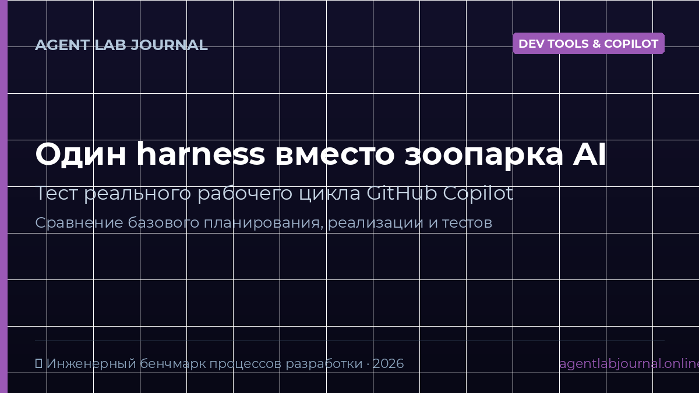

PRACTICE / AGENT LAB
Один harness вместо набора AI-инструментов: тест рабочего цикла GitHub Copilot

Этот практический материал описывает разработчики усложняют ai-процесс множеством расширений и агентов, не проверяя, дают ли они преимущество перед базовым циклом планирования, реализации и ревью. и задаёт воспроизводимый тест по теме «Один harness вместо набора AI-инструментов: тест рабочего цикла GitHub Copilot» без неподтверждённых обещаний результата.
Граница теста
Проверяем только сценарий: разработчики усложняют ai-процесс множеством расширений и агентов, не проверяя, дают ли они преимущество перед базовым циклом планирования, реализации и ревью.. Материал не утверждает готовность контура к production.
Минимальный сценарий
Зафиксируйте входные данные, настройки модели и критерий приёмки. Ожидаемый результат: Воспроизводимый workflow для небольшой задачи и сравнение базового GitHub Copilot с дополненной конфигурацией по времени, правкам и результатам тестов.. Каждому прогону присвойте стабильный идентификатор.
Проверка
Повторите тест на одинаковом наборе, сохраните измерения и сравните их с критерием. Не подменяйте измеренные данные выводом модели.
Ограничения
Это воспроизводимый учебный сценарий, а не сертификация безопасности и не гарантия поведения в production.
Связанные измерения
Материал использует измеренные запросы: . Он не обещает поискового результата.
Практические руководства · Глоссарий
Частые вопросы и ответы (FAQ)
❓ Что такое harness в контексте GitHub Copilot и AI-разработки?
Harness (каркас) — это стандартизированная среда исполнения, которая связывает AI-помощника с вашим репозиторием, линтерами, тестовыми раннерами и правилами валидации (AGENTS.md), гарантируя повторяемый результат.
❓ Почему единый harness эффективнее набора разрозненных плагинов?
Множество не связанных между собой AI-расширений создают хаос контекста, конфликт промптов и размывают ответственность. Единый прозрачный цикл (планирование -> генерация -> автотест -> ревью) исключает галлюцинации и экономит время.
❓ Как измерить реальную отдачу от GitHub Copilot на проекте?
Метрика оценивается не числом принятых строчек кода, а временем от постановки задачи до успешного прохождения CI/CD тестов, объёмом ручных правок и отсутствием регрессий на контрольных сценариях.